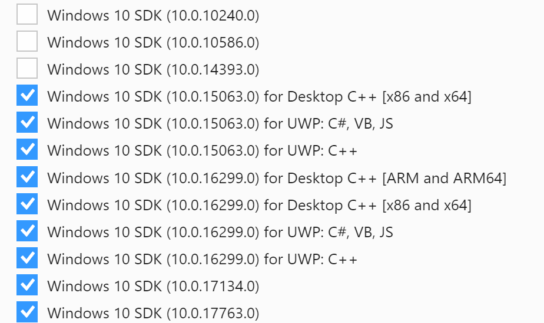
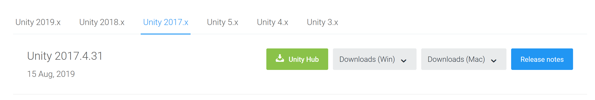
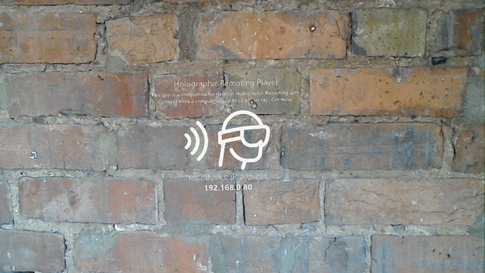
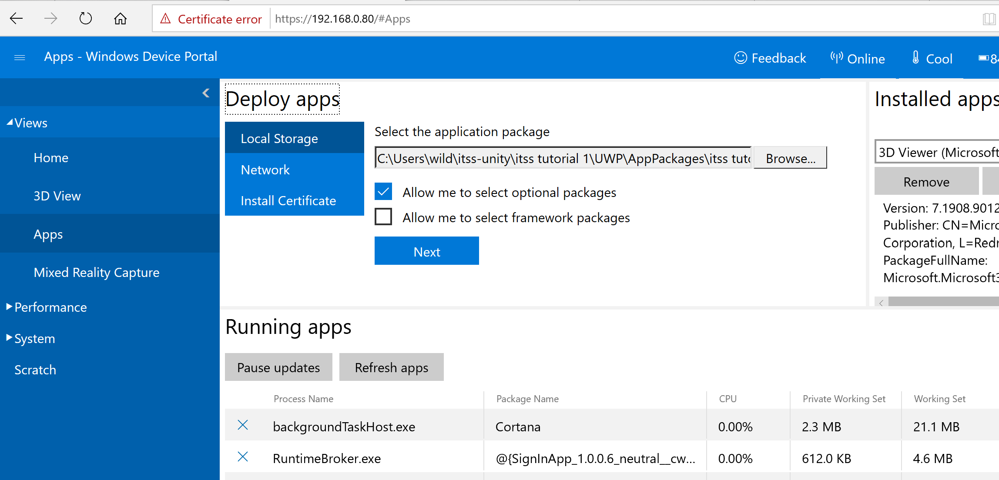

Configuring Windows for Development with Hololens (complete)
Please select your Unity version:
You have selected Version 2017.4. This is the long term support version.
Configuration
This tutorial was written for Unity3D 2017.4.31f1 (15 Aug, 2019). Via the UnityHub the modules for Windows Store .NET Scripting Backend and Windows Store IL2CPP Scripting Backend have been added. It uses Visual Studio 2017 (15.9.15) and the Windows 10 SKD 10.0.17134, see also release notes at https://github.com/microsoft/MixedRealityToolkit-Unity/releases.
It is crucial to install the required components for Visual Studio 2017 (.NET support, unity support, and the Windows 10 SDKs).

Beware: When installing through the UnityHub, the version 2017.4.31f1 is not necessarily offered, but has to be selected from the Unity3D website (click on Download Unity in the dark footer of the homepage, then click on Older Versions in the dark footer, then select 2017 to click on the UnityHub Download for the latest version 2017.4.31f1).

When you create your new project, select as target platform 2017.4.31f1. Once Unity is up and running, delete the camera and lighting from the game object Hierarchy (right click > delete). Then navigate in the menu to File > Build Settings. Select “Universal Windows”.

Navigate to Edit > Project Settings > Quality. Make sure that for the column with the Windows icon, the default quality setting is set to “very low”.

Then navigate to menu Edit > Project Settings > Player. There are several important settings that need to be done here. First and foremost, under XR settings, VR support has to be ticked and “Windows Mixed Reality” must be added to the list (best clean out the rest).

Furthermore, select the group “Publishing Settings” and make sure it has a unique package name. Additionally, don’t forget to add a meaningful Product Name at the very top. Depending on what functionality you will be using, several “Capabilities” have to be added here. For our tutorial, we will be using “Internet Client”, “Microphone”, “Objects3D”, and “Spatial Perception”.

Most importantly, the “Other” settings must set the Configuration setting for Scripting Backend to “IL2CPP” (as .NET is being phased out).

Sometimes, when compiling not via the Unity Mixed Reality Toolkit build window, but directly with Visual Studio 2017, the solution forgets which one is the main one (right click on the non-editor/player solution and set as StartUp Project). Moreover, sometimes the Capabilities are forgotten, in which case you have to find the Package.appxmanifest, click on Capabilities, and make sure the right ones are ticked. Similarly, remnants of packages no longer used some-times linger around in the configuration files, causing havoc. Vuforia is such an example (and here is a solution for that).
There are many other pitfalls, as software is still experimental. Cryptic error messages in Visual Studio, however, most often indicate version conflicts between not the right version of Unity, missing Unity modules, not the right version of the Windows 10 SDK, not the right version of Visual Studio, missing automatic updates of nuGet packages, missing Unity support for Visual Studio.
Download the 2017.4.3.0 Refresh Holotoolkit unity package from here (no need for the exam-ples and preview or sources) - we well come back to this in the first step - Spatial Mapping - of the tutorial.
Set up your Unity panels so that they look like this: Scene / Game top left, console bottom left. Hierarchy above Project in the middle column, and Inspector on the right. You can also open Window > Holographic Emulation and drag it to rest with Scene and Game. And you can open the Mixed Reality Toolkit > Build Window.

Testing
The simplest way to test the app is to use holographic remoting. For this, the Holographic Re-moting Player has to be installed on the Hololens from the Windows Store. Once started, the app will display the IP address of the Hololens. If your development machine is on the same network (and the network is reasonably open - like your home network), then Unity can directly connect to this IP address.


Pressing the big play button, will now launch the app directly on the Hololens, also providing a preview in the Game panel.

NOTE: Holographic remoting does no longer work when using the Vuforia package. This is to do with the camera not being released from processing (probably for performance reasons).
Building
Since a few versions back, the HoloToolkit also provides a convenient Build Window, which automates some of the work for you. By hand, you’d have to Build the app, then open this ex-ported (‘build’) solution with Visual Studio, then build the executable and install it on the glass-es. The Build Window is still bit instable and not always every step works - on this machine, for example, installing from there onto the device does not work and I have to use the web device portal for that. Nonetheless, building is a lot more convenient from here, see this:

Once the Unity Project is built, the appx bundle can be built, which then can be installed via the device portal. (Don’t forget to add the Dependencies\x86\ files the first time around!).
